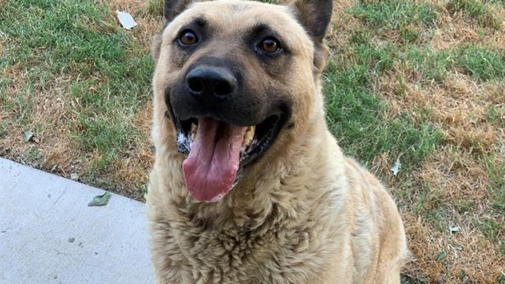

Could dogs detect COVID-19?Amarillo expert weighs in
are used for a variety of jobs, from police and military K-9s, bomb, firearm, and drug detection, therapy and emotional support and that is just naming a few.(KVII){/p}{/p}' sizes='(min-width: 1024) 1024, 50vw' src='https://abc7amarillo.com/resources/media/8b99ad79-e66d-418e-8d66-5720bef5868e-jumbo16x9_Sooner.jpg?1611791577891' srcset='/resources/media/8b99ad79-e66d-418e-8d66-5720bef5868e-large16x9_Sooner.jpg?1611791577722 1024w, /resources/media/8b99ad79-e66d-418e-8d66-5720bef5868e-medium16x9_Sooner.jpg?1611791577644 768w, /resources/media/8b99ad79-e66d-418e-8d66-5720bef5868e-small16x9_Sooner.jpg?1611791580458 320w, /resources/media/8b99ad79-e66d-418e-8d66-5720bef5868e-jumbo16x9_Sooner.jpg?1611791577891 1500w, /resources/media/8b99ad79-e66d-418e-8d66-5720bef5868e-jumbo16x9_Sooner.jpg?1611791577891 1900w, '>
Dogs are used for a variety of jobs, from police and military K-9s, bomb, firearm, and drug detection, therapy and emotional support and that is just naming a few.(KVII){/p}{/p}
AMARILLO, Texas (KVII) — Many of us are missing live concerts, sporting events, travel and more in the wake of the ongoing pandemic.
Starting tomorrow, the Miami Heat are allowing some fans into the American Airlines Arena in Miami, if they are cleared of COVID-19.
And it could be a doggone good idea.
Dogs are used for a variety of jobs, from police and military K-9s, bomb, firearm, and drug detection, therapy and emotional support and that is just naming a few.
Now dogs are being used at tomorrow’s Miami Heat versus the Los Angeles Clippers game to detect COVID-19.
But Texas Tech University Animal Science Assistant Professor, Nathan Hall said the research isn’t quite there yet to say if this is safe.
'From a scientific perspective, the deployment is kind of like putting a cart before a horse or putting a dog before the research.That has demonstrated in a convincing way that under these scenarios and settings that you would be getting reliable information,' Hall said.
COVID-19 detection dogs are already in use.According to an ESPN article, airports in Dubai, United Arab Emirates, and Finland have used these dogs and the trial has shown promise.
Canyon K9 Training Head Trainer Lisa Price is confident that certain breeds of dogs can and will be effective in detecting the disease.
'All that training is done through scent.Through the secretions of sweat and saliva and the dog is trained on picking out those individual scents through training,' Price said.
2,000 fans will be at tomorrow’s game.They will walk into a screening area where they will be approached by the dogs.
If the dogs walk by them, they are clear to enter the game.If the dog sits by their feet, the dog detected COVID-19, and the fan will not be allowed into the arena.
Price believes the dogs will do great, and is looking forward to the results.
'Yes I do, I do, and I am real excited about that to see how that goes and they will be tracking that on the amount of tests and they will track the success rate of that,' Price said.
In Texas many teams have played with a limited capacity in their stadiums.
Airlines have been devastated by travel bans and limited people wanting to fly, and so many other events have been cancelled because of COVID-19.
If these dogs pan out, the method could go a long way in re-opening events.
Posted On: 2021-01-27T00:00:00
Posted By: Matthew Kinchla

Content Date: 2021-01-27
Download Date: 2021-04-21
Document ID: L0C04AOWJ